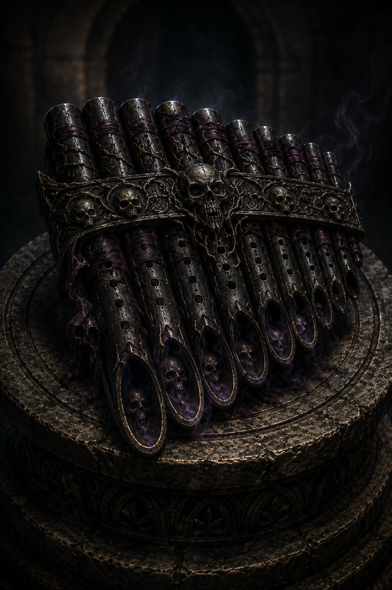

Legendary | Pan Pipes (Spellcasting Focus) | Requires Attunement by a Bard

Macabre Illusions and Nightmarish Realism
Whenever you cast an Illusion spell that deals damage, increase each damage die by one die (i.e. 1d6 to 2d6).
The saving throw DC of your Illusion spells and ability checks made to discern its illusory nature increases by one.
Granted Spell: Phantasmal Flicker. While attuned to the pipes, you know the Phantasmal Flicker cantrip. It counts as a bard cantrip for you and does not count against your number of cantrips known.
Phantasmal Flicker
Illusion Cantrip Casting Time: 1 action Range: 60 feet Components: V Duration: 1 round
You momentarily flood the mind of one creature you can see within range with a horrifying phantasm visible only to it—a corpse reaching from beneath the earth, a maw opening in impossible darkness, or another terror drawn from its deepest fears.
The target must succeed on an Intelligence saving throw or take 1d6 psychic damage and suffer a –2 penalty to AC against the next attack made against it before the end of your next turn. At Higher Levels. This spell's damage increases by 1d6 when you reach 5th level (2d6), 11th level (3d6), and 17th level (4d6).
Fashioned from the polished bone of an unknown creature and bound with blackened silver, these unsettling pan pipes seem to breathe on their own. Hairline cracks across each pipe exhale whispers that vanish before words can be understood, while tiny faces occasionally appear within the polished ivory, silently screaming before fading away. Legends claim the pipes were crafted by a bard who wandered the Shadowfell for so long that he no longer distinguished between memory and nightmare. Those who hear their melodies seldom recall the tune itself—but many remember the terrible visions that accompanied it.
"The melody is beautiful. The things it reminds you of are not." —Inscription found upon the case of Haunts of the Macabre